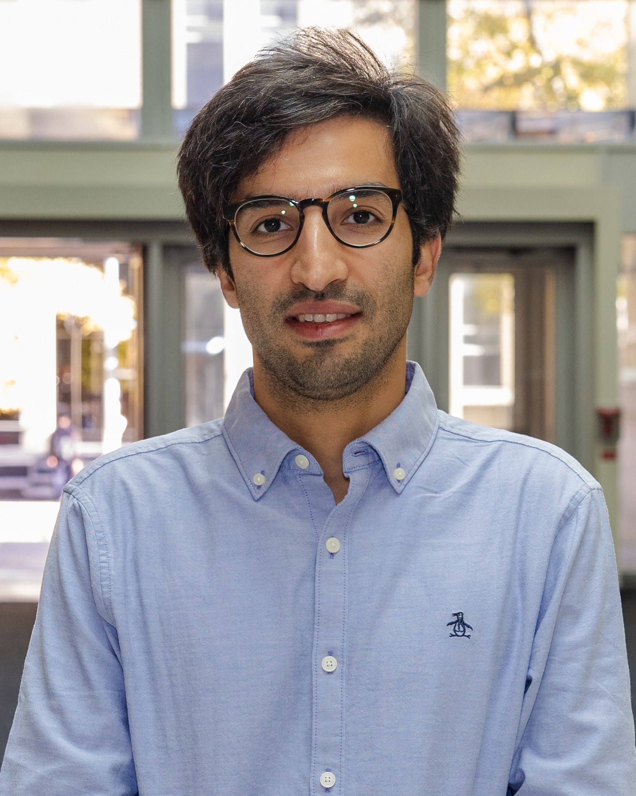

Photo by Aaron Demeter
Bahen, Fall 2026
Ali Bereyhi
ECE Department
University of Toronto
Faculty Affiliate at SRI
BA7208 | Bahen Centre for Information Technology
Email: ali[dot]bereyhi[at]utoronto[dot]ca
About
I am Assistant Professor (TS) in the Department of Electrical and Computer Engineering at the University of Toronto. I am also Faculty Affiliate at Schwartz Reisman Institute (SRI). My main area of focus is Machine Learning (ML) and Information Theory. My teachings cover a wide scope of topics in theory and applications of machine learning learning, ranging from Deep Learning and Statistical Methods to Reinforcement Learning and Generative Models. My research focuses on fundamental limits of ML models and their applications to Statistical Signal Processing.
I received my PhD (in German Doktor der Ingenieurwissenschaft) with distinction from Friedrich Alexander Universität (FAU) in Germany, supervised by Prof. Dr.-Ing. Ralf R. Müller and Prof. Dr. Hermann Schulz-Baldes. My doctoral dissertation, entitled Statistical Mechanics of Regularized Least Squares, investigates the connections between Theoretical Physics and the Theory of Learning. You can also find me on the Mathematics Genealogy Project!
Openings in My Group
Perspective graduate students are welcome to contact me by email. You can take a look at the current research in my team.
MEng Research Projects
Those who are interested in graduate research projects either in the form of Research Internship or MEng Research Module, e.g., ECE2500, may reach out through email.
- There are currently open projects on Quantum Machine Learning and AI Safety
- New: I am looking for motivated Master’s students to join a research on Safety Risks Associated with Malicious Coordination among AI Agents. The position is full-time, starting as soon as possible and ending on March 2027. The project can be undertaken as part of the MEng Research Module. If interested, please send me a brief introduction and your CV by email.
Disclaimer
Unfortunately, I am not able to respond to all application emails. If you don’t hear back from me in a course of one week or so, it is safe to consider the case closed. In that case, please accept my sincere apology for not being responsive to your email. I wish you all success with your application and thank you for taking time to write to me.